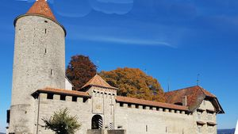
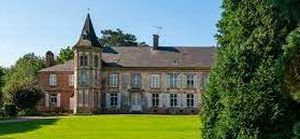

Recensement Jean-Claude Truffet


| Département | 62 — Pas-de-Calais |
| Canton | Auxi-le-Château |
| Commune | Buire le sec |
| Type d'édifice | Châteaux |
| Période d'origine | XVII |
deux châteaux dans cet article; Frémicourt et Romont à Buire le sec. FREMICOURT en Romont Par le mariage en 1600 de Barbe Wlart avec Jean Sablet, seigneur de la Hunière, la terre de Frémicourt passa dans cette famille. Peu après 1776, elle fut achetée par celle des Vicomtes de Merlimont. Dominique Le Noir, alors propriétaire, accola au bâtiment du XVIIe siècle une nouvelle construction. Pendant la Révolution, la depeure fut vendue comme bien national à Claude Antoine Pecquet de Montreuil, ce n'est qu'après la Seconde Guerre mondiale que le Vicomte de Calonne réussit à réunir, pour quelques années seulement, Frémicourt à Romont. Mais en 1822, toute une aile du château, celle du XVIIe siècle, avait été abattue. Dans son aspect actuel le château de Frémicourt est un bâtiment du XVIIIe siècle, de plan rectangulaire à deux niveaux montés sur un haut soubassement et couvert par une toiture en croupe. Long de cinq travées, sa porte d'entrée occupe celle de gauche, le perron qui l'a précédée a disparu. Les fenêtres sont encadrées de pierre lisse, elles sont de forme légèrement cintrée et de dimensions assez importantes. La façade arrière reflète lamentablement les destructions du début du XXe siècle et en 1922 on a détruit la chapelle castrale qui servait d'église paroisssiale. Château situé en milieu rural, au voisinage du château de Romont, en arrière d'une avenue, au milieu des arbres, sa façade est visible.
ROMONT à Buire le sec La seigneurie de Romont a appartenu successivement à l'abbaye de Longvilliers, aux seigneurs de Maintenay, aux Wiart d'Estrée; ces derniers l'ont possédée de 1580 à 1770. Elle fut acquise à cette date par Dominique le Noir, vicomte de Montreuil. Celui-ci ayant émigré, son domaine fut vendu comme bien national, mais demeura dans sa famille. En 1830, il fut acquis par les vicomtes de Merlimont et en 1861 par ceux de Calonne. Le château actuel a été construit au XVIIe siècle; un incendie l'a dévasté le 8 avril 1931, il fut restauré au cours des années suivantes. Au corps de logis, un long bâtiment à deux niveaux sous toiture à double versant, s'accrochent deux tourelles hexagonales; deux ailes un peu plus basses le prolongent. Ce bâtiment a été réalisé en pierre, mais la brique a été utilisée pour les encadrements des baies et les chaînages des tourelles qui sont plus hautes d'un étage que le corps principal de logis et que coiffent des pyramides d'ardoises ; ces tourelles portent des armoiries et elles présentent également des meurtrières. La façade principale, qui s'élève en arrière d'une cour limitée par une grille, est dissymétrique: deux portes à double battant y ont été percées. A l'intérieur, une pièce a conservé une belle voûte en pierre et brique du XVIIe siècle. De chaque côté de la cour, des bâtiments de la ferme et en arrière de ceux de droite, dans une prairie se dresse un pigeonnier.
Famille de Dominique Le Noir"
deux châteaux dans cet article; Frémicourt grav 1 et Romont grav-2 à Buire le sec.